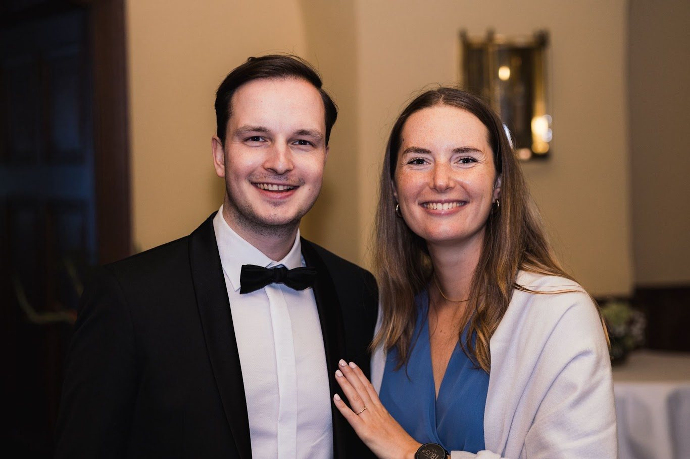
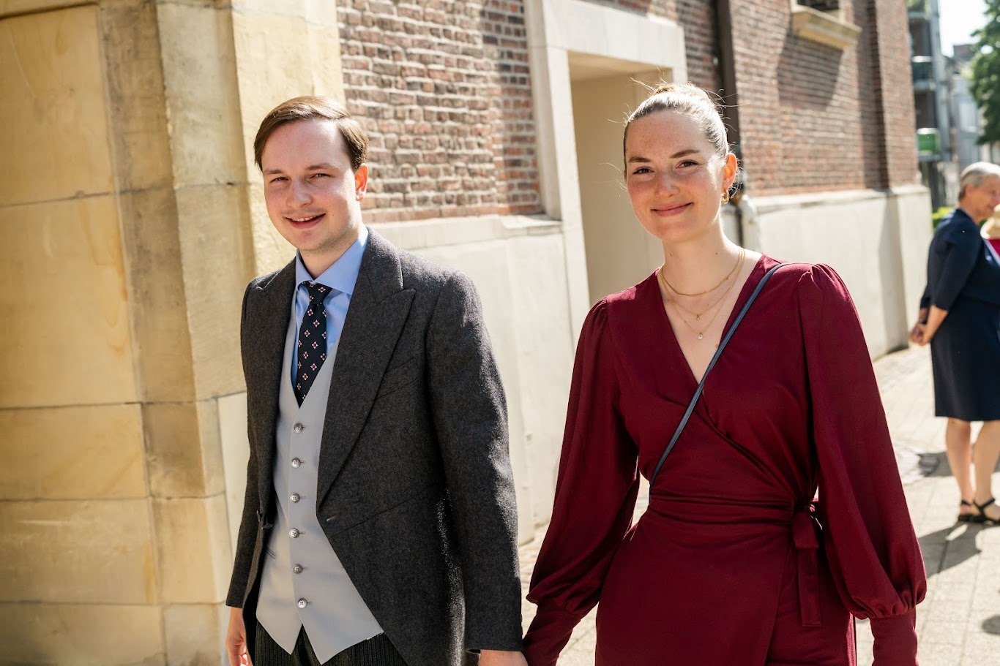
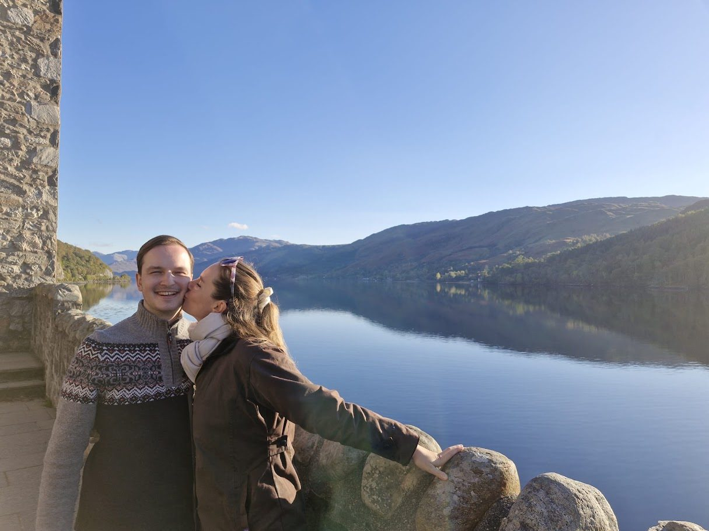
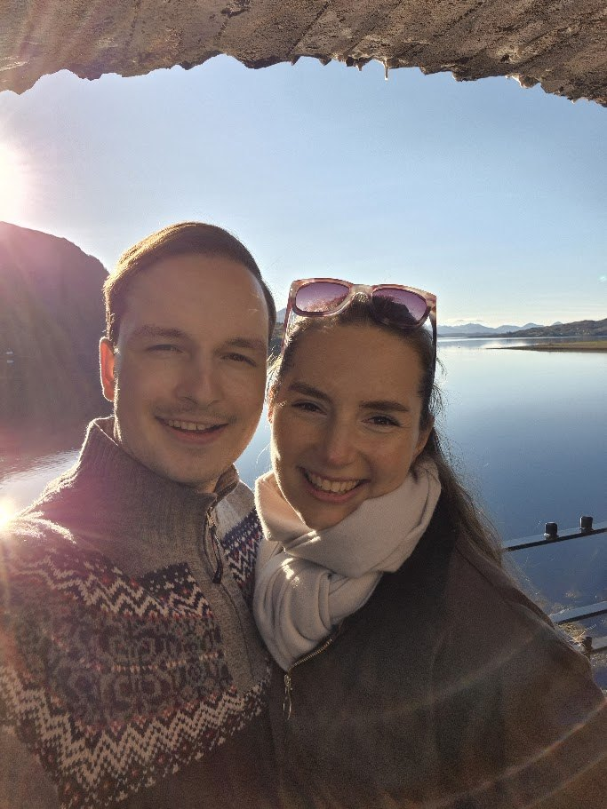

Wir heiraten
Aline & Joachim
17. Juli 2027
Samstag · Göttingen

Wir freuen uns sehr, diesen Tag mit euch zu feiern. Auf dieser Seite findet ihr alles, was ihr für den 17. Juli wissen müsst. Wir halten sie bis zur Hochzeit aktuell.
Zu- oder absagen bis 1. Februar 2027Der Tag
Programm
- 14:00Kirchliche Trauung
St. Albani Kirche - 15:00Gratulation
vor der Kirche - danachShuttle zum Kiessee
Abfahrt am Albaniplatz - 16:00Empfang im Biergarten
Kredo am Kiessee - 18:00Abendessen
Kredo am Kiessee - 21:00Tanz und Feier
bis 2 Uhr - zum SchlussShuttle zu den Hotels
zu den drei vorgeschlagenen Hotels
Anreise
Orte und Wege
Göttingen ist klein, fast alles erreicht ihr zu Fuß. Kommt bitte zu Fuß oder mit dem Taxi zur Kirche. Danach läuft alles über unseren Shuttle: zum Kiessee und nach dem Fest zurück zu den Hotels.
Taxi
Von den Hotels am Bahnhof sind es zur Kirche zu Fuß etwa 20 bis 25 Minuten durch die schöne Göttinger Altstadt, mit dem Taxi etwa 5 Minuten.
- Hallo Taxi · 0551 34034
- Puk Minicar · 0551 484848
- Taxi-Zentrale · 0551 69300
- Uber ist in Göttingen über die Uber-App verfügbar.
P · Mit dem Auto?
Wir empfehlen, das Auto am Hotel stehen zu lassen. Wer trotzdem fährt, findet hier Parkplätze:
Übernachten
Unterkunft
Diese Hotels schlagen wir vor, weil sie direkt am Bahnhof liegen und der Shuttle nach dem Fest dorthin fährt. Göttingen hat darüber hinaus zahlreiche weitere Hotels, und von der Innenstadt aus ist alles zu Fuß erreichbar. Wir haben kein Zimmerkontingent reserviert, bitte bucht daher frühzeitig.
Kleidung
Dresscode
Wir freuen uns über festliche Tagesgarderobe: für die Herren Cutaway oder dunkler Anzug, für die Damen ein elegantes Kleid.
Wünsche
Geschenke
Das schönste Geschenk ist, dass ihr mit uns feiert. Wer uns darüber hinaus etwas schenken möchte, kann uns bei unseren Flitterwochen unterstützen.
Kontoinhaber
Joachim von Alvensleben und Aline Kronberg
IBAN
DE43 5002 4024 0806 5504 32
BIC
DEFFDEFFXXX
Ansprechpartner
Unsere Trauzeugen
Ihr möchtet eine Rede halten oder plant eine Überraschung? Wir freuen uns sehr darüber. Damit der Abend nicht zu voll wird, haben wir nur Platz für wenige Reden. Sprecht euch deshalb bitte frühzeitig mit unseren Trauzeugen ab, sie behalten den Überblick und stimmen alles mit uns ab.
Trauzeugin von Aline
Amelie Dammann
Amelie.dammann@gmx.de
+49 152 02765588
Spricht Deutsch und Englisch
Trauzeuge von Joachim
Justin Rennert
Rennertjustin@gmail.com
+49 152 26221937
Spricht Deutsch, Englisch und Französisch
Fragen und Antworten
Gut zu wissen
Wer ist eingeladen?
Unsere Einladung gilt für die Personen, die namentlich darauf stehen. Habt bitte Verständnis, dass wir darüber hinaus keine weiteren Begleitpersonen einladen können.
Wie komme ich nach Göttingen?
Mit der Bahn: Göttingen liegt an der ICE-Strecke zwischen Hamburg, Hannover, Frankfurt und München. Aus Hannover braucht der ICE etwa 35 Minuten, aus Frankfurt, Hamburg und Berlin etwa zwei bis zweieinhalb Stunden. Aus Brüssel geht es mit Umstieg in Köln oder Frankfurt in etwa fünf bis sechs Stunden. Die vorgeschlagenen Hotels liegen direkt am Bahnhof.
Mit dem Flugzeug: Die nächsten großen Flughäfen sind Hannover und Frankfurt. Von dort fahrt ihr am besten mit der Bahn weiter.
Mit dem Auto: Göttingen liegt direkt an der A7, Abfahrten Göttingen und Göttingen-Nord. Lasst das Auto am Hochzeitstag aber am besten am Hotel stehen, für die Wege sorgt unser Shuttle.
Und wenn es regnet?
Der Empfang findet im Biergarten direkt am Kiessee statt. Bei Regen stehen große Schirme bereit, und notfalls ziehen wir nach drinnen um. Für den Garten sind breitere Absätze eine gute Wahl, und für den Abend am Wasser lohnt sich eine leichte Jacke oder ein Tuch.
Darf ich fotografieren?
Eine professionelle Fotografin begleitet den Tag für uns. Die Fotos stellen wir euch nach der Hochzeit zur Verfügung, ihr könnt also einfach mitfeiern und genießen.
Sind Kirche und Feier barrierefrei?
Ja. Die St. Albani Kirche und das Kredo sind beide ebenerdig erreichbar. Am Albaniplatz gibt es Behindertenparkplätze direkt an der Kirche.



Bis 1. Februar 2027
Zu- oder Absage
Gebt euren Namen und das Passwort von der Einladung ein. Dann seht ihr alle Personen eurer Einladung und könnt für jede zu- oder absagen.